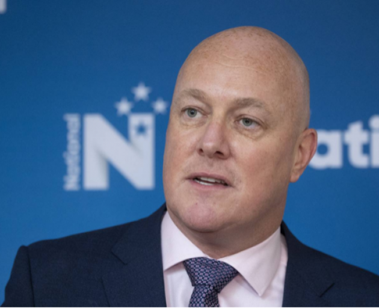
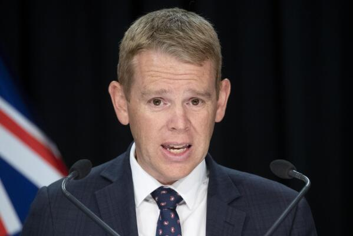

(Life’s a Riot With) Chris vs. Chris
(Life’s a Riot With) Chris vs. Chris
It will already be decided
It now looks increasingly as though the election will end in a Tory victory – and what, in politics, could be more important than appearances? Even worse than being down ten whole points against National, Hipkins (the incumbent) has even slipped a point behind Luxon in the preferred Prime Minister section. Such a result would certainly be a triumph for National, and, at that, a triumph not diminished but magnified by their laziness: “the right does not have to send their best” is practically tattooed on Luxon’s skull. The right don’t need the slick but chummy, crooked but cunning image of John Key any more; Luxon is an attempt to prove that any man with a vaguely business background and a “Koiwi” accent is all the artillery needed to win against an entrenched Labour government. (And Luxon certainly is a discount Key, though that is a topic worth exploring in focus.) Where Crusher Collins’ menace failed against Auntie Jacinda’s kindness, it seems Luxon’s stern neutrality might be sufficient against the Chipmeister-General. My goal here is to look at the present situation more-or-less from the perspective of Labour. While I understand how some on the Left might object to such a notion – instead proposing we move to Greener pastures, a new New Labour, or even unprepared extra-parliamentary action – I do still think there is use in the anti-capitalist bloc reflecting on the state of New Zealand’s liberal democracy. There are lessons to take from the current situation, especially through the exercise of imagining how Labour’s failures could have been redeemed.
Many have already written about the paradoxical nature of polls. In short, polls are able to manipulate the future by measuring that which has not happened. The result?: something akin to the observer effect in quantum physics. Of course, this happens in conjunction with the media filter described by Herman and Chomsky in Manufacturing Consent. The tendency to sensationalise headlines to maximise clicks – and this happening to cause a “bank-run” in Labour party support – is capital’s blind brilliance in action. That is what has happened in this particular case, and I do think it’s part of why Labour is behind. The particular favourite narrative is that the current government has (inevitably) grown bloated and decadent. It’s no wonder, then, why Chris Luxon has been content doing the “Joe Biden,” i.e., bunkering down knowing campaigning only loses votes. National and Act don’t need policy when non-policy will do just fine: “cut wasteful spending” is their only mantra. (Look at how barebones National’s policy list still is, even after their last-minute releases!) After six years, Labour are placed in the unenviable position of having to justify everything wrong with the country. The narrative writes itself, that Labour’s supposed idealism has failed and now we will all have to pay via the Tories’ austerity and tired neo-neo-liberalism. Add in a struggling (global) economy and that this would be Labour’s third term – any pol-sci undergrad could tell you how perilous that situation is in a liberal political landscape.

Govern more gooder.
Winning is easy; governing’s harder
My conjecture is that Labour did not collapse until they started believing the aforementioned narrative, which I’d chronologically place a couple months ago (when their poll numbers started declining, campaigning-proper began and Chippy had settled in). But Labour were incapable of picking the path that would allow them to best reject that narrative, to get off their back foot and hit National where it hurts. The situation called for Labour to (1) be direct and honest, and (2) put forth a transformative set of policies. Here’s a novel approach to the covid-accelerated crises: the truth! National have been making premature tackles on Labour’s Covid excuse, despite Labour consistently under-selling the significance of the global situation. Labour in its current form could not have pursued my path because they didn’t know it existed; it was in their blind-spot because the party establishment are still deep in Capitalist Realism. The centre-party-swap every six-to-nine years would indeed be inescapable if there really were no exit from the status quo’s paradigm. It is as though we really believe that cycle is inevitable, so much so it stifles the critical approach necessary to prevent the belief’s reification. Žižek said it perfectly to a pre-2015 Alexis Tsipras: the dream of Syriza in Greece should be nothing less than a lifetime in power with Stalinist electoral margins.
Chippy correctly feels in his bones that Labour will be dragged through the mud if they blame the pandemic – but, crucially, only without a comprehensive new deal that must accompany that truth. The day is very overcast when the Labour party turns up its nose at progressive politics even when it is their best hope. No lessons have been learnt by the liberal establishment from its catastrophic tactical failure in not nominating Sanders in 2016, clearly. As we will see, though, liberal anti-strategy makes liberals lose as much as it lets the right win.
Hipkins is caught in a web of his own making: he is unable to propose anything bold because it would rock the boat, inconceivable when approval is down; but not shaking things up was the most sure way to hand National the initiative. The beatings will continue until morale improves under Colonel Chip. The more centrism fails to win hearts, the greater its case becomes. Catch-22. It’s broken, so we can’t afford to fix it! Excruciatingly, Labour has instead gone down the path of mirroring the Nats, leaving the two debates a master-class in post-politics. The key is that the two Chrises aren’t really debating; they argued over who would be the best administator of the current order. In line with this, Labour’s battle-plan seems to have been couched in wielding their incumbency as a weapon. (Nicky Hager relayed in Dirty Politics how negative campaigning is typically asphixiating for the left.) Damn it, Chippy! Again, surely this is the time. What have you got to lose? There are only two possibilities, either that Labour earnestly believed this would be the best strategy, or that Hipkins doesn’t want to be more than National-lite. Neither seems meaningfully less grim than its alternative. (For what conjecture’s worth, I lean to the first conclusion.)
Possibly the only moment in the debates where Hipkins showed any spark, one of the few moments I can pull out of the haze, was when the topic switched to Māori, right at the end. His position was hardly wild, but it was firm and – god, for once – it was political. For that it was refreshing. For once, Chris took a stand against the right and the obvious racism underlying the opposition’s approach to “co-governance.” Perhaps the student leader with curtain bangs still lives somewhere in there. This was a whiff of what the reset after Ardern should have been. The sunglasses should have been followed the next day with a major press conference in which Labour could offer a new, honest and (relatively) radical agenda: strengthening labour, restructuring welfare; eduction reform; public works and ecological action; etc. (Go, go, Chippy the Red!) In short, finally taking the next step to dismantling our entrenched neo-liberalism. National would be forced to switch off auto-pilot. And so too would the people of Aotearoa, because, for the first time in an era, they would be offered a real choice.

It's not quite jaundice!
(Life’s a riot with) Chris vs. Chris
Fate gave us on the Left a gift, a pair of major party leaders as tough to discern taxonomically as rhetorically. To rephrase: if there were a mobilised Left, this would be an atheistic godsend in aesthetics. They appear as two but speak (and are named) as one! It is silly that the two leaders of the two eerily-similar-sounding major parties are both named Chris – so silly it’s pointless to make fun. Mockery is as uplifting from the jester as it is depressing from the town drunk. We’re firmly the latter while Aotearoa still has no conceptual space for a real alternative to the Lab-Nat see-saw. There are already lessons for radicals to take from the election, regardless of which way it goes.
Firstly, in case anyone hasn’t learnt this yet, we cannot count on Labour to save us. Let me reverse, restate and re-emphasise that: forgetting our bigger, grander plots for a moment, we cannot let ourselves think anyone could save Labour but us. Jeremy Corbyn proved that even a Labour party falling ass-backwards into hope is insufficient without a mass-mobilisation and repoliticisation of the people. In vulgar Marxist terms, it’s only the masses who make history; and, in a less vulgar addition, it is we who must embody any new awakening. All of this is the case whether our avenue of opportunity is Labour or some another platform.
Secondly and lastly, analysis reveals what only it can, that being the series of the counter-factuals to what has actually gone down – transporting us to alternate realities if you prefer it in sci-fi terms. Merely by rearranging the pieces already on the board, I’m convinced, Labour could have at least offered an engaging narrative of its own. (Perhaps if a reader of Having a Bad Dream woke up in Chippy’s body) Labour could have been re-energised by opening the door of political possibility. In the inverse of marginalist centrism, change in politics is inherently a making-real of that which was previously unimaginable. Centrism will do anything to win, and, in doing so, renders winning pointless. As Mark Fisher said:
emancipatory politics must always destroy the appearance of a ‘natural order’, must reveal what is presented as necessary and inevitable to be a mere contingency, just as it must make what was previously deemed to be impossible seem attainable.
Some might here disagree with my care to bother, on the grounds that Labour exactly didn’t reform in this way. But what is the point in interpreting the world without wishing with every breath to change it? How is a Left that struggles with an impenetrable Realism supposed to flip the script if we refuse to even imagine taking power. Varoufakis leads by example here. Tell me, what happens the day after the revolution? A golfer can practice their drive all they like, but they’re nothing without a short-game.